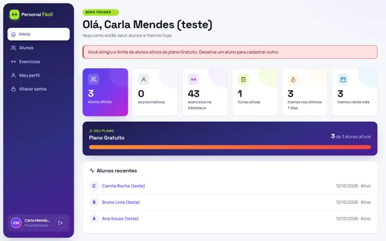
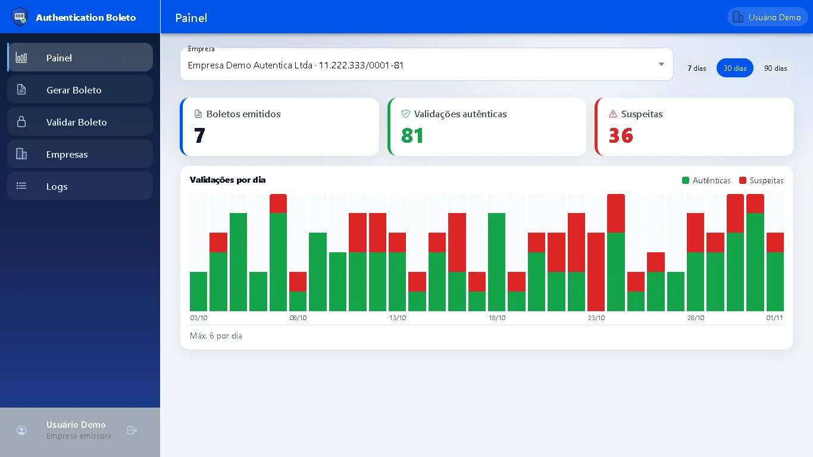

Personal Fácil
SaaS para personal trainers autônomos gerenciarem alunos, exercícios, fichas de treino e o histórico de execução.
Ver detalhesRepositórioPortfólio
Desenvolvedor de software com foco em aplicações web full stack com Java/Spring Boot e Angular. Projeto em destaque.
Ver projetosGitHub
SaaS para personal trainers autônomos gerenciarem alunos, exercícios, fichas de treino e o histórico de execução.
Ver detalhesRepositório
Verificação antifraude de boletos com 2FA: validação pública para o pagador e painel de métricas para a empresa emissora.
Ver detalhesRepositórioComo rodar